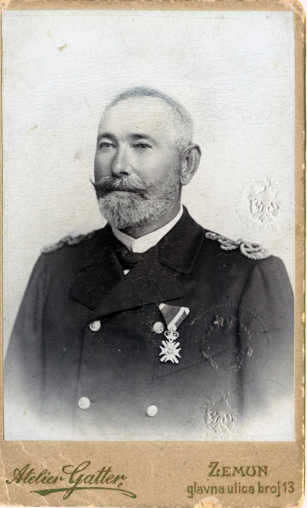
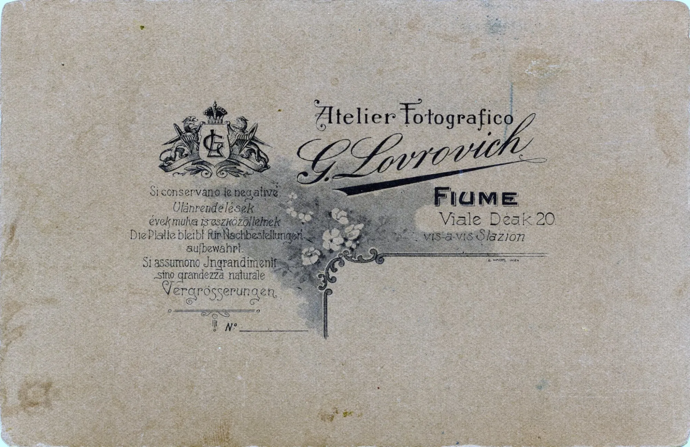
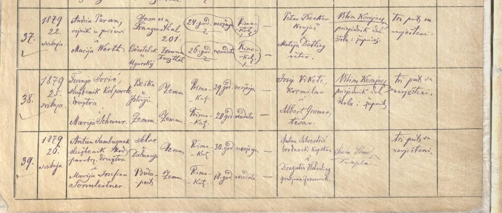
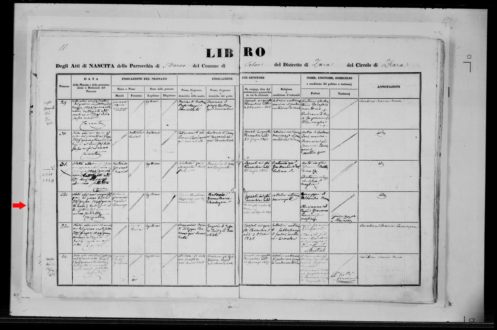
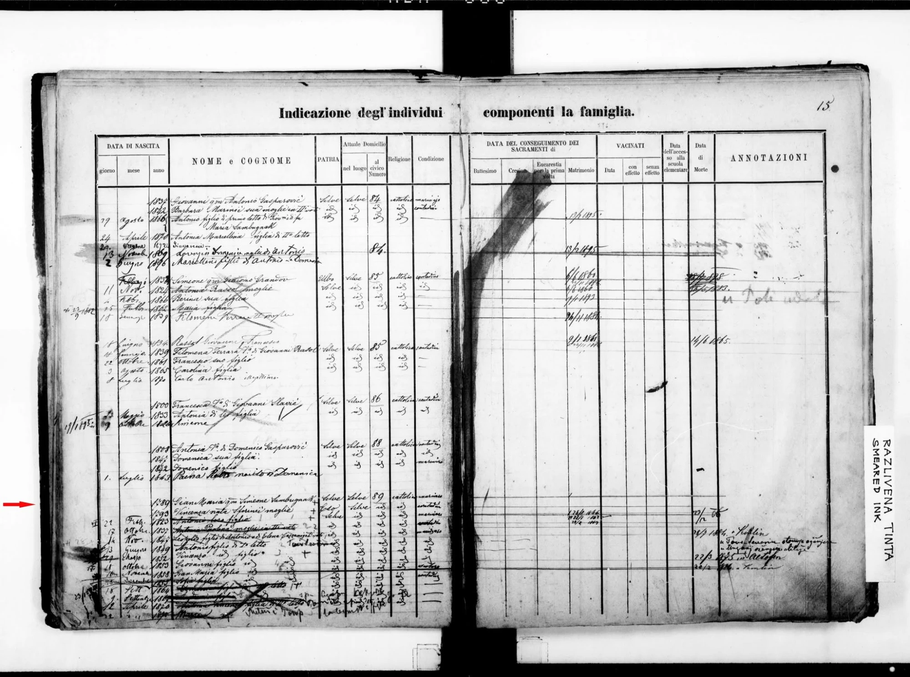

Antun Sambunjak, Danube steamship captain
Sanya Pleshakov asked the Croatian community where their great-grandfather died and which cemetery he may lie in. His birth and marriage are on record; his death is not. This page is a living, honest account of what the papers show and what is still missing.
The original request
Dear community, I am looking for help to find out more about my great-grandfather—I’m curious where he died and in which cemetery he might be buried. I suspect possibly Rijeka, which I am hoping to visit next year. Lidija Sambunjak helped me find his birth and marriage records, but his death is still a mystery to me.
His name was Antonio Giovanni Maria Vincenzo Sambunjak born on June 13, 1849, in Silba, Zadar, Croatia. He married Marija Josefina Sonnleitner on May 26, 1879, in Zemun. They had 12 children and he worked as a captain for the Danube Steamship company, Donaudampfschiffahrtsgesellschaft. Before my dad passed away, he told me that my great grandfather and some family members fled to Rijeka/Fiume during WWI and that he probably died around that time. (One of his daughters Marija Ana Sambunjak stayed in Rijeka and married a man from Zadar.)
Any hints would be greatly appreciated. Sanya Pleshakov, Facebook community post, October 2026
Fled to Rijeka during WW1 ?????!!! Mato Uta Grujo, reply to the post
| Who | Antonio Giovanni Maria Vincenzo Sambunjak (written Sambugnak, Sambugnai and Anton Sambugnak in the records) |
|---|---|
| Born | 13 June 1849, Silba, Zadar |
| Married | 26 May 1879, Zemun, to Marija Josefina Sonnleitner |
| Work | Captain, Danube Steamship Company (DDSG) |
| Children | 12, per the post; one daughter, Marija Ana, stayed in Rijeka and married a man from Zadar |
| The question | Where did he die, and where is he buried? |
What would move this forward
- 1. Three drafted enquiry letters (Rijeka registry office, Rijeka cemetery operator, Zemun parish). A death entry for 1917 or later (the 1917 marriage record suggests both parents were then living). Look in Zemun’s Catholic registers first (Record Atlas lists Zemun under the Military branch of “Croatia, Church Books”), then Rijeka (Fiume) for roughly 1917–1925. Rijeka was governed from Budapest until 1918, then was Italian/Free State territory, so the register language and the holding archive change with the date. Start with the Rijeka civil registry office (matični ured) and the State Archive in Rijeka.
- 2. The Rijeka cemetery operator, KD Kozala, which keeps the burial registers. Kozala itself dates from 1838. Ask whether they can search by name.
- 3. Ilona’s 1964 Budapest death entry, Sándor Sambugnak (the 1917 witness), and the FamilySearch contributor behind the Budapest profiles. After that, Marija Ana’s own records (her marriage, and her death) — a daughter who stayed in the city is the likeliest door to the father’s burial.
- 4. The two community voices who know the area: Lidija Sambunjak, who found the first records, and anyone who can read the Rijeka registers.
The five images supplied with the post
Described as they appear. Readings of handwriting are mine and marked where uncertain.
1 · The portrait (front)


2 · The card (back)


3 · Marriage entry, Zemun, 1879


| Date | 1879, late May (the post gives 26 May; the day number is hard to read in the image) |
|---|---|
| Groom | Anton Sambugnak, službenik kod parobrodarskog društva (employee of the steamship company); native of “Selve u Dalmaciji”; resident in Zemun; Roman Catholic; 30; unmarried |
| Bride | Marija Josefina Sonnleitner; from Budapest; resident in Zemun; Roman Catholic; 18; unmarried |
| Witnesses | Anton Silvestrić, brodarski kapetan (ship’s captain) and Dragutin Helmling, citizen of Zemun |
| Banns | Read three times |
| Notes | On this date he is already in the steamship company, but as an employee, not yet a captain. “Selve” is the Italian name of Silba. |
4 · Birth entry, Selve, 1849


| Entry 32 | Born 13 June 1849, 5 p.m.; baptised 17 June. Child: Antonio Giovanni Maria Vincenzo, legitimate |
|---|---|
| Parents | Father: Antonio Giovanni Maria Sambugnai (I read “Sambugnai”). Mother: Elena Carolina, surname read as “Cazzanigo” (uncertain) |
| Parents’ marriage | 26 August 1846 (the place is unclear in my reading) |
| Namesake | Entry 31, a few lines above, is a different baby, “Antonio Giovanni Maria”, born about 9 June 1849 to other parents. A margin note reads as dying 25 Nov 1849. The post’s man is entry 32 (the full four-part name matches); anyone searching on “Antonio Giovanni Maria” alone could land on the wrong child. |
5 · Family register, Selve, house no. 89


| Head | Gian Maria, son of the late Simeone Sambugnak, born 1789; wife Vincenza née Sforini (born 1793) |
|---|---|
| Next line | Their son Antonio (born 1823); then his children. One line reads “Leopoldo, son of Antonio and Elena Cazzanigo”, born 14 Nov 1847; another “Antonio, son of the first marriage”, born 13 June 1849, our man |
| Siblings | Vincenzo (1852), Giovanni (1853), Gian Maria (1858), Sofia (1855), and later lines that are crossed out or unreadable. “Son of the first marriage” implies Antonio senior remarried after Elena Carolina. |
| Margin notes (right) | Several later notes in a different hand, which I can only partly read: “Altofen” (the German name of Óbuda in Budapest) with 22/3 1875; “Zemlin” (Semlin, Zemun) with 20/2 1884; and a Croatian line that may say a man married in Hungary. I have not been able to tie any note to a particular row. Treat all of this as a lead, not a reading. |
The Óbuda note fits the bride’s Budapest origin and the known DDSG yard at Óbuda, but that is my inference. Needs a better scan.
The spine
Found: a 1917 marriage that puts the family in Zemun
Research session of 17 October 2026, FamilySearch and Findmypast (signed in). A search of FamilySearch historical records for the exact surname Sambunjak (46 results) found one European match, a Hungarian civil marriage. I opened the register image and read it.
| Record | Hungary, Civil Registration, 1895–1980: marriage in Budapest, 20 July 1917, entry 447 (volume “Budapest. Marriage Records 1915”, image 549 of 816) |
|---|---|
| Bride | Ilona Auguszta Sambunjak, Roman Catholic, born 1886 (24 August in the FamilySearch index; the day is hard to read on the page). Residence given as Zimony (Zemun), street and house number 11, street name not legible to me |
| Her parents | Antal Sambunjak and Mária Sonnleitner. On the page the groom’s parents are marked néhai (the late); the bride’s parents are not, which would normally mean both were living in July 1917. That is my reading of the convention, not something I have checked against the register’s instructions |
| Groom | Károly Lajos Mészáros, born 22 February 1884, of Budapest; his parents Gyula Mészáros and Emilia Mária Sonnleitner, both marked deceased (the groom’s mother shares the bride’s mother’s maiden name; no relationship shown) |
| Witnesses | Dávid Károly, Budapest I, Fehérvári út 1/4, and Sándor “Sambugnak” (signed with the old spelling), Budapest I, Fehérvári út 17. Sándor is probably a brother or other close relative of the bride, but the page does not say so |
| 1964 death entry | I also read Ilona’s death entry (entry 806, Budapest, 10 September 1964, volume “Budapest. Death Records 1964”, image 64 of 131). It gives her as the wife of Károly Mészáros, born in Zimony (Zemun) on 24 August 1886 (the day number is hard to read), daughter of Antal Sambunjak and Mária Sonnleitner. So Antal and Mária Sonnleitner were living in Zemun when Ilona was born in 1886, which is the same town where our Antun, a steamship employee, married a Sonnleitner in 1879 |
| Tree profile | A public Family Tree profile gives Ilona’s death as 10 September 1964 in Budapest. Her parents’ profiles (Antal, Mária) have no dates. They were added in April 2026 by a contributor shown as “Zsuzsanna T.”, who may know more |
What this does to the Rijeka story
- If this is our family, Ilona was still living in Zemun in 1917, not in Rijeka. Belgrade fell to the Central Powers in October 1915, so Zemun was no longer on the front line by then. The family story of fleeing to Rijeka in the war may therefore describe 1914–1915, or 1918 when Zemun passed to the new Yugoslav state, or one part of the family.
- If both parents were living in July 1917, the death falls after that date. “Around the war” becomes “1917 or later”, which opens the Zemun and Rijeka registers of 1917–1930s and the Hungarian registers for 1917–1918.
- A family member was in Budapest in 1917, and Ilona died there in 1964. A death in Budapest is possible too.
A second Budapest branch
Searching the Italian-style spelling (Sambugnak, 36 results) found Marietta Sambugnak, born 1896, who died in Budapest on 15 July 1938; her father is indexed as Vince (Vincenzo), her mother as “Solamovič Poréna”. The 1849 family register lists a brother Vincenzo (born 1852). That is a possible brother of our man, also in Budapest, but it is a guess from a first name and a city.
What else was checked
- FamilySearch exact surname Sambunjak (46) and Sambugnak (36), read in full: the rest are US residence and Social Security entries, Croatian church books for other Sambunjak families (Lussino, Biograd, Split, Zadar) and Argentine records. No death entry for an Antonio/Antal born 1849 appeared. Control: the diacritic spelling Sambunják returns the same 46, and Szambunjak returns 0; Sambunyak (3) is only Ellis Island and a Slovak entry.
- FamilySearch, Mária Sonnleitner with spouse surname Sambunjak (348 fuzzy results): the only matches are the two 1917/1964 entries above, and no death for her.
- Findmypast, exact surnames Sambunjak (8), Sambugnak (1) and Sambunyak (2): all United States, plus one 1909 UK outgoing passenger to the Cape (a J Sambugnak, born about 1870, not linked to this family). Findmypast’s Sonnleitner entries for people born about 1861 (93) are American and German. Findmypast holds almost nothing for Hungary or the former Yugoslavia, so this is a weak negative.
- Web searches for a Sambunjak captain with the Danube steamship company, in German, Hungarian and Croatian, found nothing on the open web, but ANNO (see the newspaper section) does hold two printed notices. DDSG staff records are still the place to look for a retirement or death.
- FamilySearch catalogue, Zemun: only four church-book items exist for the town, all Austrian army garrison and field-hospital books (the 1870–1913 garrison book, a 1910–1914 one and two earlier hospital ones). I found no civil Catholic parish death register for Zemun after 1917 on FamilySearch, so that search has to go through Serbian holders (the Zemun registry office or the Historical Archive of Belgrade). I have not confirmed which of them holds it.
- FamilySearch catalogue, Rijeka: the Rijeka parish item (“Matična knjiga, 1590–1920”, Croatian State Archive, 26 films) lists births to 1901 and indexes to 1920 in the part I could page; I did not find a death volume for 1917–1925, and I did not see all of its items. Fiume’s army garrison book runs 1854–1918 but would only cover servicemen. Not established: whether Rijeka deaths of 1917 onward are online at all. Under the 1860 rule they are likely with the registry office.
- FamilySearch, Sándor Sambugnak and a search by parents (father Sambunjak, mother Mária Sonnleitner): Sándor is not indexed under those spellings, and the parent search returns only Ilona (3 entries). Other children may be in the Hungarian registers under another spelling or may not be indexed.
- Not yet searched: a Zemun or Rijeka death entry (needs a local request); a death entry for Antal in the Zemun Catholic registers 1917 onward; Hungarian civil deaths 1917–1918 by place; the 1964 Budapest death entry for Ilona; Sándor Sambugnak.
Errands
Three letters that could settle where Antun died and where he lies. They are drafts for Sanya (or whoever is helping) to send; none has been sent, and nothing on this page has been checked with the offices named. Street addresses and email addresses are deliberately left out because I have not confirmed them: look each one up on the office’s own website before sending. Sanya said the interest is in finding the grave in Rijeka, so the Rijeka and cemetery letters come first.
1 · Rijeka registry office (matični ured)
| Send to | The Rijeka city civil registry office (matični ured). Address to be confirmed from rijeka.hr. |
|---|---|
| Ask for | An extract or copy of any death entry for Antun Sambunjak, 1914–1930, including the Italian period. |
| Why | Under the 1860 rule, registers of that age are normally held by the registry office, not an archive, so no catalogue shows them. |
| Who sends | A descendant of Antun (Sanya Pleshakov, who asked the original question). Fill in the sender line. I have not sent, and will not send, anything. |
Draft (Croatian)
Predmet: Zahtjev za pretragu matične knjige umrlih — Antun (Antonio) Sambunjak, rođen 13. lipnja 1849. u Silbi
Poštovani,
istražujem svoju obitelj i tražim podatke o smrti pradjeda Antuna (Antonio Giovanni Maria Vincenzo) Sambunjaka, rođenog 13. lipnja 1849. u Silbi (tadašnji Selve, Dalmacija). Bio je kapetan Dunavskog parobrodarskog društva (DDSG), živio je u Zemunu i ondje se 26. svibnja 1879. oženio Marijom Josefinom Sonnleitner. Prema obiteljskoj predaji obitelj je tijekom Prvog svjetskog rata otišla u Rijeku (Fiume), gdje je on vjerojatno i umro. Mađarski upis vjenčanja njegove kćeri u Budimpešti 20. srpnja 1917. ne označava ga kao pokojnog, pa je smrt vjerojatno nastupila 1917. ili poslije. Njegova kći Marija Ana Sambunjak ostala je u Rijeci i udala se za muškarca iz Zadra.
Molim Vas da provjerite postoji li u matičnim knjigama umrlih za Rijeku (uključujući razdoblje talijanske uprave) upis o smrti Antuna Sambunjaka u godinama 1914.–1930. Prezime je u starijim zapisima pisano i Sambugnak, Sambugnai ili Sambunjak, a ime Antonio, Anton ili Antun. Ako upis postoji, molim izvadak ili preslik upisa, s datumom i mjestom smrti te mjestom ukopa ako je navedeno. Ako je za to potreban dokaz srodstva ili pravni interes, molim da mi javite koje dokumente da priložim. Ako upisa nema, molim da mi javite koje su knjige i godine pregledane.
Unaprijed zahvaljujem na trudu.
S poštovanjem,
[ime i prezime, adresa, e-pošta]
English gloss
Subject: Request to search the death register — Antun (Antonio) Sambunjak, born 13 June 1849 in Silba
I am researching my family and looking for the death of my great-grandfather Antun (Antonio Giovanni Maria Vincenzo) Sambunjak, born 13 June 1849 on Silba (then Selve, Dalmatia). He was a captain with the Danube Steamship Company (DDSG), lived in Zemun and married Marija Josefina Sonnleitner there on 26 May 1879. Family tradition says the family went to Rijeka (Fiume) during the First World War and that he probably died there. The Hungarian record of his daughter’s marriage in Budapest on 20 July 1917 does not mark him as deceased, so the death is probably 1917 or later. His daughter Marija Ana Sambunjak stayed in Rijeka and married a man from Zadar.
Please check whether the Rijeka death registers (including the Italian period) hold an entry for Antun Sambunjak between 1914 and 1930. Older records spell the surname Sambugnak, Sambugnai or Sambunjak and the name Antonio, Anton or Antun. If an entry exists, please send an extract or copy with the date and place of death and the place of burial if given. If proof of kinship or legal interest is needed, please tell me which documents to enclose. If there is no entry, please tell me which books and years were searched.
2 · Rijeka cemetery operator (KD Kozala)
| Send to | Komunalno društvo Kozala Rijeka, which runs the city’s municipal cemeteries (the Kozala cemetery opened in 1838). Contact details to be confirmed from their own site; a first search found no online name lookup. |
|---|---|
| Ask for | A search of the grave registers for Sambunjak / Sambugnak, and for the daughter Marija Ana. |
| Why | The cemetery law requires grave registers and a register of the deceased, so a burial should be findable if he was buried in a municipal cemetery. |
| Who sends | A descendant of Antun (Sanya Pleshakov, who asked the original question). Fill in the sender line. I have not sent, and will not send, anything. |
Draft (Croatian)
Predmet: Upit o grobnom mjestu — Antun (Antonio) Sambunjak i Marija Ana Sambunjak
Poštovani,
tražim mjesto ukopa pradjeda Antuna (Antonio) Sambunjaka (rođen 1849. u Silbi, vjerojatno umro u Rijeci nakon 1917.; u starijim zapisima i Sambugnak) i, ako je moguće, njegove kćeri Marije Ane Sambunjak (udane u Rijeci). Molim Vas da provjerite grobne očevidnike i registar umrlih osoba pod tim prezimenima (Sambunjak, Sambugnak, Sambugnai) te da mi javite postoji li upis, koje groblje i grobno mjesto, te kako mogu dobiti potvrdu ili preslik. Ako pretraga po imenu nije moguća, molim da mi objasnite što je potrebno (godina smrti, datum rođenja).
Zahvaljujem i srdačno pozdravljam,
[ime i prezime, adresa, e-pošta]
English gloss
Subject: Enquiry about a grave — Antun (Antonio) Sambunjak and Marija Ana Sambunjak
I am looking for the burial place of my great-grandfather Antun (Antonio) Sambunjak (born 1849 on Silba, probably died in Rijeka after 1917; older records also spell it Sambugnak) and, if possible, of his daughter Marija Ana Sambunjak (married in Rijeka). Please check your grave registers and register of the deceased under those surnames (Sambunjak, Sambugnak, Sambugnai) and tell me whether there is an entry, which cemetery and plot, and how I can get a certificate or copy. If a name search is not possible, please tell me what is needed (year of death, date of birth).
3 · Zemun: Catholic parish and the state registers
| Send to | First the Zemun Catholic parish (church of the Assumption of the Virgin Mary), whose books may still hold 1917–1945 entries. If they refer you on, the Historical Archive of Belgrade or the Zemun municipal registry office. I have not confirmed which of these holds the books. Addresses to be confirmed. |
|---|---|
| Ask for | A death entry for Anton Sambunjak (Sambugnak), 1917–1945, or a pointer to whoever holds the Zemun Catholic books of that period. |
| Why | Zemun was his home from at least 1879, his daughter was still there in 1917, and FamilySearch holds no Zemun civil Catholic death book after that. |
| Who sends | A descendant of Antun (Sanya Pleshakov, who asked the original question). Fill in the sender line. I have not sent, and will not send, anything. |
Draft (Serbian, Latin script)
Predmet: Molba za pretragu matične knjige umrlih — Anton (Antun) Sambunjak, rođen 13. juna 1849. na Silbi
Poštovani,
istražujem svoju porodicu i tražim podatke o smrti pradede Antona (Antonio Giovanni Maria Vincenzo) Sambunjaka, rođenog 13. juna 1849. na ostrvu Silba (tada Selve, Dalmacija). Bio je kapetan Dunavskog parobrodarskog društva (DDSG), živeo je u Zemunu i tamo se 26. maja 1879. oženio Marijom Josefinom Sonnleitner. Njegova ćerka Ilona Auguszta, rođena 1886, živela je u Zemunu kada se 20. jula 1917. udala u Budimpešti, a roditelji nisu označeni kao pokojni, pa je smrt verovatno nastupila 1917. ili kasnije. Porodično predanje kaže da je porodica u ratu otišla u Rijeku, ali ne mogu da isključim da je umro u Zemunu.
Molim Vas da mi javite da li se u Vašim knjigama (rimokatoličke matične knjige umrlih Zemuna, 1917–1945, odnosno državne matične knjige posle toga) nalazi upis o smrti Antona Sambunjaka, koji se u starijim zapisima piše i Sambugnak ili Sambugnai. Ako postoji, molim izvod ili kopiju upisa. Ako Vi niste nadležni, molim da me uputite kome da se obratim, naročito gde se čuvaju zemunske katoličke matične knjige iz tog perioda.
Unapred zahvaljujem,
[ime i prezime, adresa, e-pošta]
English gloss
Subject: Request to search the death register — Anton (Antun) Sambunjak, born 13 June 1849 on Silba
Same facts as the Rijeka letter, with one addition: his daughter Ilona Auguszta (born 1886) was living in Zemun when she married in Budapest on 20 July 1917 and her parents are not marked deceased, so the death is probably 1917 or later. I cannot rule out that he died in Zemun and not in Rijeka.
Please tell me whether your books (the Roman Catholic death registers of Zemun for 1917–1945, or the state registers after that) hold a death entry for Anton Sambunjak (older spellings Sambugnak, Sambugnai). If so, please send an extract or copy. If you are not the right office, please tell me who is, in particular where the Zemun Catholic parish books of that period are kept.
Found: the captain in the newspapers
ANNO, the Austrian National Library’s newspaper archive, searched on 17 October 2026 for Sambunjak (16 hits) and Sambugnak (9 hits). Three printed notices are very likely our man (and a fourth is the same story as one of them). I read each page image.
| 29 July 1892 | Neue Freie Presse, page 3 of the evening issue, in a long list of decorations awarded by foreign rulers to Austrians: Anton Sambugnak, Schiffsführer (ship’s master) of the First Imperial-Royal Privileged Danube Steamship Company (DDSG), in Semlin, receives the Royal Serbian Order of Takovo, fourth class. The same notice is in the official part of the Wiener Zeitung of 24 July 1892, page 1, which reads “der Schiffsführer der Ersten k. k. priv. Donau-Dampfschiffahrts-Gesellschaft Anton Sambugnak in Semlin” (the Emperor’s permission to accept and wear the order) |
|---|---|
| 6 April 1900 | Agramer Zeitung, page 4, under “Eine edle That” (a noble deed): the captain of the DDSG, commander of the Pančevo ship “Mathyas Király”, Herr Anton Sambugnak, saved nine people who had been stranded for eight days on an island near Pančevo after a storm, by taking them aboard and carrying them to Pančevo. The same story, headed “Neun Menschen gerettet”, is in the Neuigkeits-Welt-Blatt of 12 April 1900, page 17 |
| 3–13 July 1915 | Tagespost (Graz), 7 August 1915, page 15, spa guest list for Varaždinske Toplice (then “Warasdin-Töplitz”, Croatia): “A. Sambunjak, Schiffskapitän, m. Gem., Semlin”: a ship’s captain from Semlin, with his wife. If this is Anton, he was alive in July 1915, still a captain, and living in Semlin, with a wife (Mária would be about 54) |
What this adds
- It confirms the DDSG captain story from independent printed sources, and gives three dated markers: Semlin 1892, a Pančevo ship in 1900, and a Semlin captain with his wife at a spa in July 1915. Together with the 1917 marriage entry (parents not marked deceased) that points to a death in 1915 or later, probably after July 1917.
- It shows the spelling Sambugnak was the one used in the German-language press of the time. Search for that form first in the Austrian and Hungarian archives.
- Later years are worth a second look: Pančevo is across the Danube from Belgrade, so a move there or to Belgrade in the 1900s is possible.
Other ANNO hits, not (yet) read
Read and set aside as other men: Die Zeit 29 Dec 1914 (Thomas Sambunjak “from Selve”, a sailor of the Austrian Lloyd ship Marienbad, interned); Die Zeit 19 Feb 1915 and Tagespost 18 Sep 1915 (reserve-officer promotion lists naming a Tomo/Thomas Sambunjak); Wiener Zeitung 30 Sep 1898 (a court notice about Antonio Sambunjak, son of Domenico). Not yet read: Narod (Split) 1 Jan 1889 and 17 Jul 1891; Correspondenz-Blatt für den Katholischen Klerus Österreichs 1909 and 1910; Wiener Zeitung 28 Jan 1862 and Gazzetta di Zara 1841–42 (Sambugnak). Silba had many Sambunjaks, so each hit needs checking against “Anton” and “Semlin/DDSG” before it counts.
Where to look next, and why the records are hard
- Rijeka was governed from Budapest. From 1779 to 1918 it was a Hungarian corpus separatum. Its administrative records are Hungarian, which is why Hungarian portals find them and Croatian catalogues sometimes do not. (Record Atlas region note, Kvarner.) From 1918 to 1943 it was Italy or the Free State, and Sušak went to Yugoslavia. A death in the war years can therefore be filed under Hungary, Italy or Croatia depending on the day.
- Modern civil registers. Under the Croatian rule, post-1860 registers went to the civil registry offices and only those up to 1860 to the state archives (Milić 2017, as cited in Record Atlas). So a post-1914 death is probably not in an archive catalogue at all. The catalogue’s silence says nothing about the book. Ask the Rijeka matični ured.
- State Archive in Rijeka (EHRI entry) holds fonds from the Italian period onward, including prefecture material. The list of refugees from Rijeka and Sušak is catalogued under a Croatian-Slavonian government fonds (catalogue entry). I have not opened it; it may concern a later emigration, not 1914.
- Cemeteries. KD Kozala runs Rijeka’s municipal cemeteries (Kozala, the oldest, opened 1838). No online name lookup turned up in a first search, so the way in is a direct enquiry.
- Zemun and the war. Zemun faced Belgrade across the Sava, so it sat on the front line from July 1914. That would explain why a family might leave. I have not sourced a specific evacuation, and a Zemun death is still possible, so Zemun’s Catholic death registers matter as much as Rijeka’s.
- The steamship company. DDSG employee records, if they survive, would give his retirement or death. The 1879 witness, Anton Silvestrić, a ship’s captain, is another thread.
Record Atlas has a place file for Zemun (catalogued under the Military branch of “Croatia, Church Books” on FamilySearch, though the town is in Serbia) but none for Silba or Rijeka, and no catalogued volumes were checked for this page. This is a first desk pass, not a register search.
A note on names and places
| Surname | Sambunjak (modern) · Sambugnak · Sambugnai · Sambugnaj (Italian-style clerks); search all of them, plus Cyrillic Самбуњак |
|---|---|
| Given name | Antonio · Anton · Antun · Ante · Antal (Hungarian) · Anton |
| Silba | Selve (Italian, on both the 1849 books and the 1879 marriage) |
| Zemun | Semlin (German) · Zimony (Hungarian) · Zemlin (as in the margin note) |
| Rijeka | Fiume (Italian) · Reka; 1918–1924 the Free State of Fiume |
| Country | Dalmatia in 1849 and Zemun in 1879 are Austria / Austria-Hungary, not Croatia/Serbia/Yugoslavia. Rijeka before 1918 is filed under Hungary. |
| The company | DDSG: Donau-Dampfschiffahrts-Gesellschaft; Croatian Prvo dunavsko parobrodarsko društvo |
What this page is, and is not
A working page: the post and its five images, read as carefully as the scans allow, a short desk check of where Rijeka’s records sit, and a first FamilySearch and Findmypast session. No register has yet been read page by page, and no death has been found. Names of living people are limited to the poster and the community members who took part in the thread. Transcriptions are mine and fallible; corrections from anyone who reads these scripts natively are very welcome.